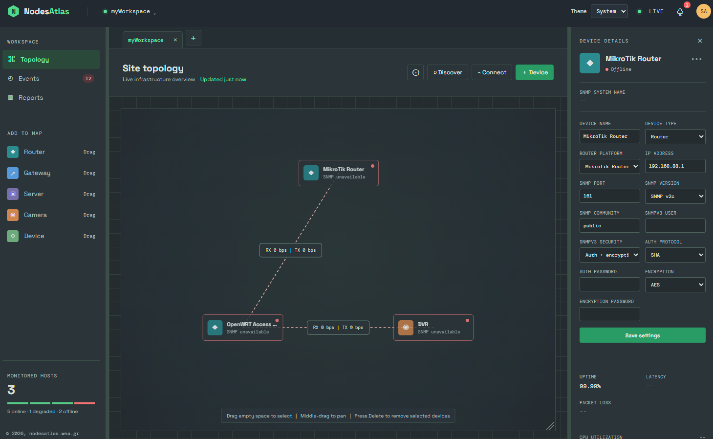

SNMP TOPOLOGY MONITOR
nodesAtlas polls MikroTik, OpenWRT, and standard SNMP devices in real time and draws the results as a live, drag-and-drop topology — uptime, traffic, CPU, and memory at a glance. It also accepts imports from WiND and The Dude so you can bring an existing network map into the app in minutes, with no database or cloud account required.

WHY NODESATLAS
Drag devices into place, connect them by interface, and watch link traffic and device health update every second.
Recognizes RouterOS and OpenWrt sysDescr strings automatically and surfaces platform version, CPU, and memory.
When SNMP is unreachable, a right-click ping tells you instantly whether a device is merely quiet or actually down.
Rename, export, and import your whole topology as a single JSON file — easy to back up or hand to a teammate.
Bring in public WiND maps or The Dude device/link CSV exports, then tidy up SNMP credentials and let the topology come alive.
A single local JSON file stores your topology — no database, no account, no cloud service required.
Ship it as a portable Windows app for a technician's laptop, or run the same code as a small self-hosted web service.
WHAT'S NEXT
No signup, no cloud, no lock-in — just point it at your devices.
⬇ Download NodeAtlas